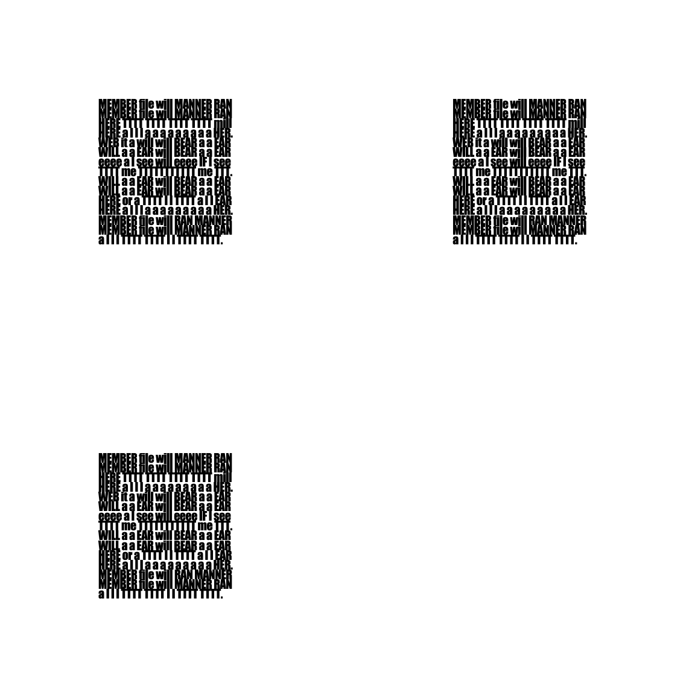

Native seam example
The ordinary pipeline creates 1,071 scored points. Near the intended centers, the largest point size is only 11.67 px; the expected central size is about 97.86 px. The returned dimensions are 93 and 79, versus the intended 25.
Native letter spacing now produces much cleaner black-and-white bands. The ordinary locator still fails to recover the intended three corners. We have a more specific next objective.
Prose QR remains unsolved. These incomplete finder layouts contain no encoded link. No phone scanning is requested at this checkpoint.
Moving the scan band toward capital T top bars improved horizontal continuity. Selecting whole words using native binarized pixels improved spacing. Reducing row seams helped the vertical direction. This diagram uses the saved measurements; it does not alter a QR image.
Six runs can include edge white space around the five main bands. Clean center axes alone do not establish a valid finder region or recover a payload. The seam example still varies between corners.
The ordinary pipeline creates 1,071 scored points. Near the intended centers, the largest point size is only 11.67 px; the expected central size is about 97.86 px. The returned dimensions are 93 and 79, versus the intended 25.
The same ordinary pipeline creates three scored points, each exactly 72 px, matching the expected 72 px. All intended corners are located.
The large intended candidates are absent from the scored set in the two audited text examples. Improving a center cross is insufficient here. The source also checks diagonal patterns and builds candidates across rows.
A separate, passively instrumented diagnostic copy snapshots candidate ranking. Its returned locations exactly match the ordinary implementation on three retained inputs. It supplies no expected coordinates and changes no thresholds or ranking. It is not an acceptance reader.
This is an incomplete three-corner test, with no QR payload. The archived PNG is unchanged; this page scales its display to fit your screen. Tight, repeated letters remain crowded and conspicuous.

Open original PNG · Exact visible textFour capture aborts, one source-width rejection, source snapshots, uncompleted manifest entries and checker/audit repairs are retained. Administrative restarts are not additional failed scans. Aqrobat 0.4.2 is unchanged, npm stays private/unpublished, and PR #1 stays draft.
Continue in this repository and branch. No project migration, new agent/chat, new host, release or product integration is planned at this checkpoint.
Phase report · Checkpoint · Final verification · Custody inventory · Retained-pixel replay · Passive rank audit · Full audit, lossless gzip JSON
Opened primary sources: jsQR locator and binarizer. Exact installed source hashes are pinned in the evidence.